Sandwich 1.0
A shy little render layer manager for Maya
Written by Andreas Ekoutsidis
Sandwich is a name based render layer manager for Maya, that has been written during my free time while I have been working on my personal projects. It's based on concepts and working experience of Andrew Chapman's Render Passes for Maya plugin.
In comparison, Maya's approach has always been using connections to setup all render layers. Because of this solution, it's pretty fast to setup render layers. But it comes with a price:
These have been the three main problems that I have been fighting for a long time. After been using Andrew Chapman's solution back in the days when I worked as a 3d artist, it really felt like this was the approach to go.
As I previously stated, Sandwich is name based. Sandwich finds its objects, shaders and attributes by name instead of storing connections. This means that any object or shader can be deleted and reimported in the scene and still work as long as their names are the same.
Fun fact!
This whole crazy idea of deleting and reimporting objects came from a time at my work for several years ago when
Maya's reference tools still were too unstable to use in production (I think this was around Maya 6 or 7). As you
can imagine, it had been a real pain if we used render layers when deleting and reimporting objects all the time.
In order to run Sandwich, you will need:
Supported render engines:
Japp..
A render layer in Sandwich has been broken down into sections. Sections, that are represented as tabs in the interface. These are the sections:
Overview
Helpful information. Each render layer should contain comments, descriptions and any other information that
helps any artist to understand what your render layer is doing.
Visibility
What should be visible in the layer? This section describes that by specifying the objects by their names
and the use of asterisks. As the later suggest, instead of specifying for example eight objects manually:
You can shorten it down by using an asterisk:
Shaders
Which shaders should be used? This section specifies what shaders should be applied to which objects. Even
here, you can use asterisks when specifying objects for a shader.
Attributes
Which attributes should be changed? Any type of attributes that must be applied can be specified here,
like render stats (casts shadows, primary visibility, etc). Even here, asterisks can be used when specifying
the affected objects.
Override Globals
Overriding Sandwich's defaults in Globals. There are several settings from Sandwich's Globals that can be
overriding at render layer level.
Render Globals
Overview of the changed render globals for the layer. This section helps you keep track of which render
globals that specifically have been set for the render layer compared to the defaults in masterLayer.
Code
Additional MEL that needs to be executed. This section lets you specify override and revert code for a
layer using MEL.
The most important concept of Sandwich is the art of naming objects. Everything must have a name, no matter if it's an exact name (ex. chest_GEO, leftEye_GEO) or a diffuse name (ex. metalicDetail032_GEO). There are some helpful guidelines that is recommended to follow:
All names should have a suffix depending on object type
By object type, I mean curves, meshes, lights, cameras, etc. Ending each with a suffix helps you to easier
identify what object it is.
However, there is an additional reason for this in the scope of Sandwich. If you wish to apply an attribute to a couple of objects with poor naming:
You might think this will work to select them all:
Indeed, all of the three objects will be selected. However, their shape nodes will be selected as well because their names are:
The only way to avoid this is by making sure the transform nodes ends with a suffix. Renaming the above objects will solve our problem:
Here is a suggested list of suffixes to use:
| Type | Suffix |
|---|---|
| mesh, nurbs, subdivs | GEO |
| groups | GRP |
| lights | LGT |
| cameras | CAM |
| curves | CRV |
| shaders | SHD |
If you need to name additional types of objects, try to limit the suffixes to no more than three letters.
Use paddings when naming multiple objects with the same name
It's okay to name multiple objects with the same name, if you use an incremental number for each. Depending on
how many objects, you should adjust the padding accordingly. If you for example wish to name 324 objects with
the same name you should use a padding of 3:
Never begin a name with a capital letter
Maya makes a difference between small and capital letters. LeftSection_GEO and
leftSection_GEO is not the same name. It's usually common sense to begin all names
with a small letter, even in programming and VFX in general.
Add important keywords to your names
If you find yourself in cases where you have a lot of objects, it could be wise to add additional keywords
in the objects' names in order to distinguish between them.
An example would be for the name tree_GRP that contains the geometry for a tree. If you have several types of trees, you could name them:
Already, you have given them additional details for your own good. But it also helps you select different trees depending on what you need. The first two names have one keyword. The two last items have two keywords to give you more control.
It's even recommended to use keywords in namespaces when you might need them. Usually, the scenario is when you need two or more instances of an file for different purposes.
Index your namespace for multiple instances of the same reference file
..
Be aware of non-unique names
You will encounter situations where you will have the same name twice or more. This is possible when they
are not in the same group. In such situations, Sandwich will select them all by default. If this is not what
you wish for, you need to specify it's parent. Let's see an example:
When you only specify:
Sandwich will select the both instances of tree01_GEO. However, if you are only concerned for the item in treesFront_GRP you need to add it's name to the object path:
Do note that you can have any number of items in the path to your object name depending on how much you need to specify to come to the right objects.
As most examples usually shows without namespaces, this is how the same line above would be written using namespace tr01:
Anywhere in Sandwich where you enter the names of objects to be affected by either visibility, shaders or attributes, you can add Python comments. This can help you understand further what each objects are and why they are used. Example:
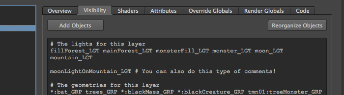If you end up using a lot of reference files within your scene, you might find yourself stuck with a lot of namespaces. These can clutter down your texts and make it harder to quickly read the content. If you find yourself stuck in such cases, make use of comments!
From the first launch of Sandwich, a transform node called sandwichNode will be added into your scene. This node can remain hidden or grouped into some obscure place. However, do never rename it. If Sandwich can't find the node, a new will be created and all layers and settings will be gone.
Everything in Sandwich are saved as attributes on the node, completely visible if you wish to transfer or modify them with your own tools. For more in-depth information about the attributes, jump down to About the sandwichNode.
When you launch Sandwich for the first time in a scene, the Globals dialog will popup above the interface:
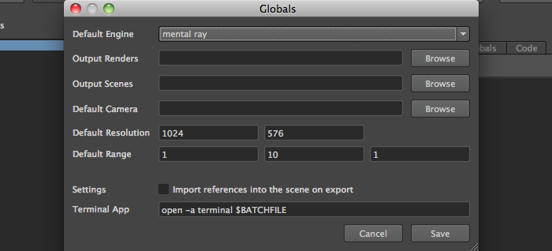The reason is that there are some important options that must be set in order for Sandwich to work properly:
Default Engine sets the default render engine to be used for all render layers. This setting can be overridden at render layer level by going to the Override Globals tab.
Output Renders sets the directory where all the renders should be rendered to when using the Render... button from Sandwich's toolbar. Further directories will be created from this level any time a new render is executed, so don't worry that they all will be piled inside here.
Output Scenes sets the directory where all render scenes will be exported to either before rendering or when you export the scenes using the Export... button from Sandwich's toolbar.
Default Camera sets the default camera to be used as render camera for all render layers. This setting can be overridden at render layer level by going to the Override Globals tab.
Default Resolution sets the default resolution to be used for all render layers. This setting can be overridden at render layer level by going to the Override Globals tab.
Default Range sets the default frame range to be used for all render layers. This setting can be overridden at render layer level by going to the Override Globals tab.
Import references into the scene on export is a ridiculous setting I had to add during my personal project because my reference objects started to disappear when rendering with mental ray when having too many in the scene. Probably a bug, but I kept it there if needed.
Terminal App is the command Sandwich has to execute to create a separate terminal outside of Maya in order to render your render layers. You do only need to change this line if you are on Linux, since it really depends on what terminal application you use. Notice the $BATCHFILE variable. That variable will be converted into a file path pointing to a bash script during the execute, so please remember to include the variable when modifying this setting!
Once you have set all the settings and press Save, then you are ready to use Sandwich. You can of course cancel the dialog and still use Sandwich, but do remember to go back here soon again to finish the settings. As soon as the Globals dialog has been closed for the first time, a transform node will be added to your scene called sandwichNode. This node will contain all render layers and all settings so never rename or remove it unless you know what you are doing!
The interface has three main sections - the toolbar above, the render layer list to the left and a tab layout to the right with all settings for the selected render layer:
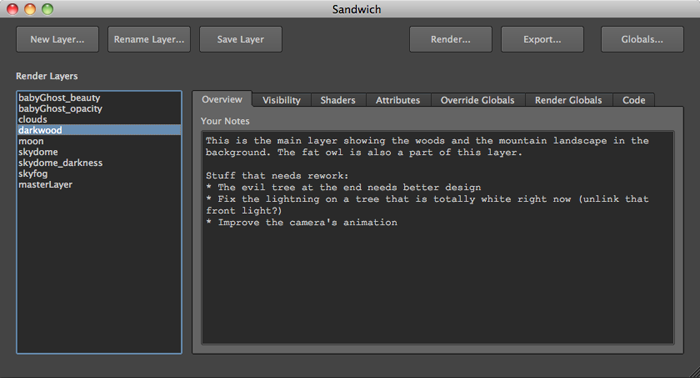The toolbar consists of buttons for creating, renaming and saving render layers as well as buttons for rendering, exporting and accessing Sandwich's settings.
The Render Layers list shows all render layers available within the scene. Only one layer at the time can be selected.
The tab layout will show the content of the selected render layer. Because that Sandwich has divided a render layer into so many sections, that's why I ended up doing a tab for each.
When launching Sandwich for the first time, every topnode will be hidden and in Sandwich you will see that masterLayer is selected in the list. As you start to unhide objects in Maya, you will also realize that all objects have lambert1 attached to it.
In Sandwich, masterLayer is a default render layer that can not be used directly. However, from masterLayer you can set the default render globals for each render engine you wish to use. Go to The Render Globals section in order for further details.
In order to managing the layers, you need to get familiar with Sandwich's tools that are located at the left side of the main toolbar:
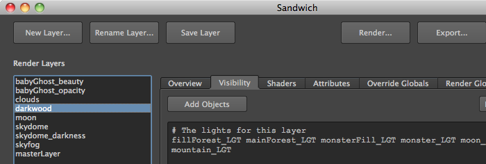The first three buttons are related to handling render layers:
New Layer... lets you create a new render layer. Only letter a-z, digits and underscores are allowed in the name. Once created, that render layer will be selected in the Render Layers list and every topnode in the scene will be hidden and have lambert1 attached to it. This is to let you start from scratch easily.
Rename Layer... lets you rename the selected layer in the Render Layers list. All layers must have unique names.
Save Layer will save the current settings and execute them in the scene. This is probably the most common button you will use in Sandwich. No matter how many shaders or attributes you add, or objects you put in the Visibility tab, no changes will be made in the scene until you hit this button.
In order to switch between the render layers, you simply select the one you wish to go to in the Render Layers list.
If you ever need to delete a render layer, right click it in the Render Layers list and click Delete Layer from the context menu.
This section lets you add description and comments to your render layer:
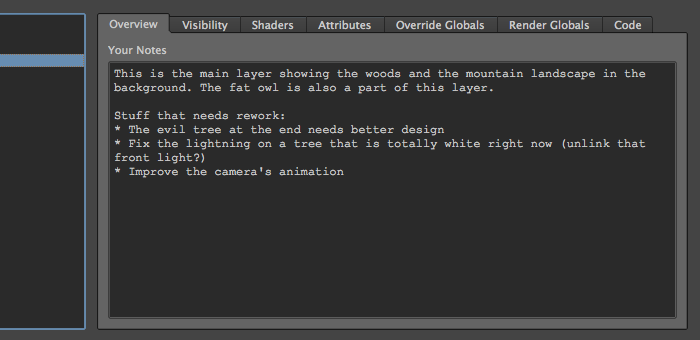There are many reasons why you should fill this section with information:
Everything that should be visible in this layer are specified here by writing their names. You are allowed to use asterisks in names and Python comments as you learnt earlier in the Basics section.
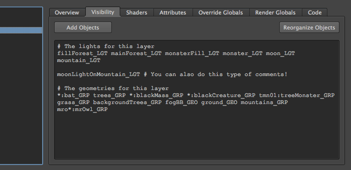This tab also have two buttons - Add Objects and Reorganize Objects:
Add Objects will add the names of whatever objects you have selected in Maya. Sandwich will only add them if they have not yet been specified. Since Sandwich supports asterisks in names, they will also be checked before the objects are getting added.
Reorganize Objects sorts the content of the window in alphabetical order. If it finds scenarios where you have entered Python comments in the text field (like in image 2) then all objects written below a comment will be sorted separately.
This section handles the applying of shaders on the current layer. It's shader centric, meaning you first add a shader and then apply objects to it.
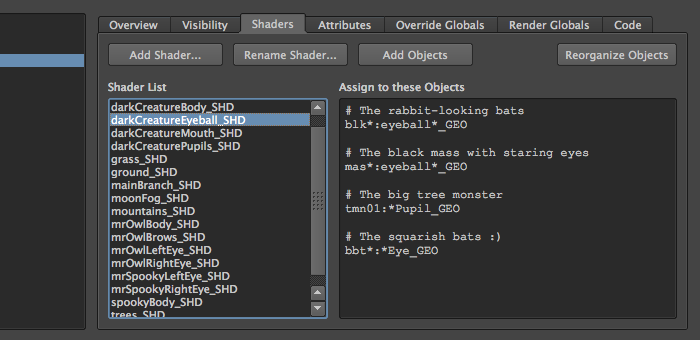The left list called Shader List shows all current shaders for the layer. You can add any number of new shaders by clicking the Add Shader... button. From the dialog that pops up, you will get a list of all shaders within your scene that are not yet apart of this layer. Remember to name all your shaders in a good way to make it easier for you to find them.
Once you have added a shader, it will become selected. Any shader that are selected will show which objects it will be applied on in the Assign to these Objects text field. As in the Visibility tab, you are allowed to use asterisks in names and Python comments as specified in the Basics section. You may also use sets if you like.
Any item in the Shader List can be right clicked to reveal a context menu with a few items:
Rename Shader... is used to rename selected shader. You can also use the Rename Shader... button from the interface.
Transfer Shader... is used to transfer selected shader with it's assigned object into another layer. If shader already exists in that layer, you will be asked if you wish to overwrite the shader or not. Sometimes helpful when needing to reuse a shader setup on more than one render layer. Note: The transfer to the other render layer will be saved automatically, you do not need to press Save Layer for this.
Delete Shader... will delete the shader from the list.
And as below Visibility, we have two familiar buttons in the interface:
Add Objects will add the names of whatever objects you have selected in Maya. Sandwich will only add them if they have not yet been specified. Since Sandwich supports asterisks in names, they will also be checked before the objects are getting added.
Reorganize Objects sorts the content of the window in alphabetical order. If it finds scenarios where you have entered Python comments in the text field (like in image 2) then all objects written below a comment will be sorted separately.
This section handles the changes you wish to do on attributes on the current layer. It's attribute centric, meaning you first add an attribute and then sets the values and objects for it.
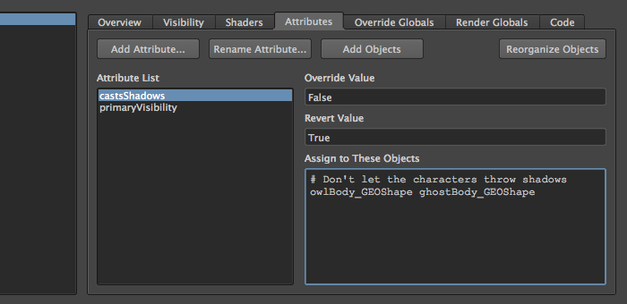The idea is that when a layer becomes active, it will set the Override Value for all attributes that the layer have. It could be changes in the Render Stats for objects, shader settings that need to be changed specifically for a layer, etc. When the layer is switched for another layer however, the Revert Value will be set in order to restore the attributes to their default state.
It's important to understand that certain attributes exists on object level and other at shape level and very few exists on both. Doing this kind of assignment can give unpredictable results:
This will not only select the object, but also the shape as mentioned in the Basic's section Naming Objects. Any object that Sandwich do not find the specified attribute for will be printed as a warning in the Script Editor.
The left list called Attribute List shows all current attributes for the layer. You can add new attributes by clicking the Add Attribute... button. From the dialog that pops up, you enter the name of the attribute. If you spelled it wrong you can always change it later using the Rename Attribute... button.
Once you add an attribute, it will become selected. Sandwich will only trigger the attribute if Override Value, Revert Value and Assign to These Objects have been filled out. As usual, you are allowed to use asterisks in names and Python comments when specifying objects. You may also use sets if you like.
Any item in the Attribute List can be right clicked to reveal a context menu with a few items:
Rename Attribute... is used to rename selected attribute.
Delete Attribute... will delete the attribute from the list.
Several settings that you defined in Sandwich's Globals can here at render layer level be overridden:
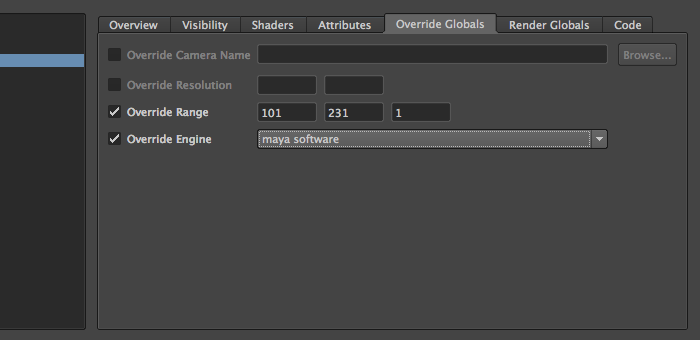In order to activate an override, click the check box next to it. Do the opposite to inactivate an override. The following overrides exists:
Override Camera Name overrides the default render camera for the current render layer. Either type in the name of a camera or use the Browse button.
Override Resolution overrides the default resolution for the current render layer.
Override Range overrides the default range for the current render layer. The fields are: start frame, end frame and increment frame. The increment frame field is usually set to 1.
Override Engine overrides the default render engine for the current render layer. If you for example wish to use Paint FX for a specified render layer, you can use this setting to set the current render layer to maya software.
In this last tab, you are able to add custom MEL code that will be executed for the current layer:
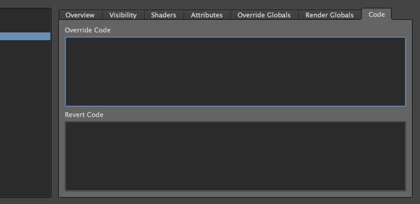You have the following two fields:
Override Code is the code that gets executed when the current layer gets activated.
Revert Code is executed when the render layer is changed into another layer, in order to revert all changes you setup in the Override Code field.
When your layer gets activated, executing the code in this tab will be the last step Sandwich does before the layer is ready. Firstly, it will run all Revert Code that exists for all other layers since Sandwich can't guarantee which was the last selected layer. This is done in order to revert any changes that an Override Code may have set in the scene. Then, it will execute the Override Code for this layer.
It's important that you do not forget that this is the very last thing Sandwich does before the layer is ready. Since anything can be overridden here (visibility, applied shaders, attributes, etc), you should be careful with what code you write. Sandwich can't control your actions, it will only warn you if an error occurred.
And please do not forget to fill in the Revert Code that contains the code to revert the changes that you setup in Override Code!
Sandwich has basic render managing support for you who don't have a render farm or other tools to handle your renders. From Sandwich's toolbar, click the Render... button. The following dialog will appear:
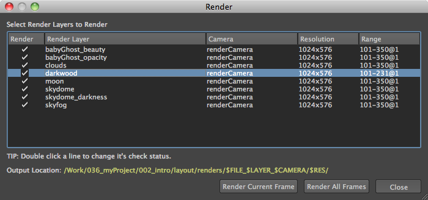It will list all your render layers you have along with information about render camera, resolution and range that will be used for each layer.
The left most column called Render specifies which render layers should be rendered. Either click each's checkbox or double click a render layer in order to change it's status.
As mentioned earlier, Sandwich will create additional folders for each render layer. The outgoing path can be seen at the bottom of the dialog, next to the text Output Location. It will expand the variables for $FILE, $LAYER, $CAMERA and $RES into the current file name, render layer, render camera and resolution used. This is to help you organize all your iterations you will do with your renders.
In order to do the render, you have two buttons in this dialog - Render Current Frame and Render All Frames:
Render Current Frame will render the current frame that's selected in Maya.
Render All Frames will render the whole range for each render layer.
Once you click on any of the render buttons, it is important to understand what's happening:
If you do not wish to render the layers using Sandwich's approach, you can also export as render ready scenes. From Sandwich's toolbar, click the Export... button. The following dialog will appear:
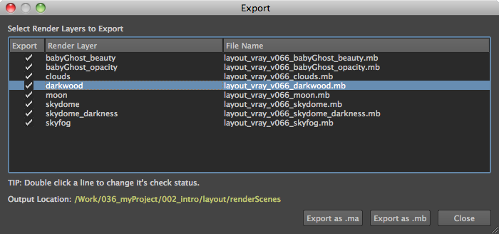It will list all your render layers you have and the name each will have as a file on disk.
The left most column called Export specifies which render layers should be exported. Either click each's checkbox or double click a render layer in order to change it's status.
The path the render scenes will be exported to can be found at the bottom of the dialog, next to Output Location. That path is set by Output Scenes in Globals.
In order to do the export, you have two buttons in this dialog - Export as .ma and Export as .mb:
Export as .ma will export selected render layers as Maya Ascii scene files.
Export as .mb will export selected render layers as Maya Binary scene files.
You can customize Sandwich by setting environment variables before launching Maya. This is the complete list:
SANDWICH_OUTPUT_RENDERS
Sets the path to the directory where all the renders should be put.
SANDWICH_OUTPUT_SCENES
Sets the path to the directory where all render scenes will be exported to.
SANDWICH_RESOLUTION
Sets the default resolution. Resolution must be written as widthxheight. No spaces are allowed. Example:
SANDWICH_RANGE
Sets the default frame range. Range must be written as start end increment. Use space to separate the three
values. Example:
SANDWICH_IMPORT_REFERENCES
Sets if all references should be imported into the scene before render/export. Valid values are 1 or 0.
SANDWICH_TERMINAL
Sets the full path to the terminal with the necessary flags to execute a new terminal with
$BATCHFILE as a variable for the path to the batch file that will be generated by Sandwich.
Settings this variable is usually only necessary if you run Linux. The default value for this variable in Linux is:
Sandwich stores all layers and settings on a node called sandwichNode. It has two sets of attributes. The default ones that are required for Sandwich to operate and those that gets added each time a new render layer gets created.
The general attributes:
.globals (dictionary)
Holds Sandwich's Globals settings.
.current (string)
Hold the name of the latest selected render layer as a string.
.renderGlobals (dictionary)
Holds a default set of render globals for each render engine.
The render layer attributes:
.<renderLayer>_overview (string)
Holds the overview text.
.<renderLayer>_visibility (string)
Holds the visibility text.
.<renderLayer>_shaders (dictionary)
Holds the shader data. Each entry looks like:
.<renderLayer>_attributes (dictionary)
Holds the attribute data as a dictionary. Each entry looks like:
.<renderLayer>_settings (dictionary)
Holds the override globals data as a dictionary. Each entry looks like:
Where bool defines if override is active or not.
.<renderLayer>_renderGlobals (dictionary)
Holds the Render Globals overrides.
.<renderLayer>_code (dictionary)
Holds the override and revert code. Each entry looks like:
All files of Sandwich are sorted into different directories depending on their purpose. Here are the root items of Sandwich:
__init__.py
core/
data/
docs/
gui/
libs/
signals/
About __init__.py
This is the startup file of Sandwich. It contains the main Sandwich() object that will launch the entire
tool using the following three files:
About core/
About data/
About docs/
Contains the entire documentation, written in HTML+CSS. index.html is the main file where the documentation starts from. Subdirectory
images/ contains all images in the documentation and style/ contains all CSS.
About gui/
Contains all QFrames and QDialogs used in Sandwich. Each has their own file
and are prefixed with frame or dialog. It's also from here that their counterparts in libs/ and signals/ gets
imported and subclassed.
About libs/
These files contains the handlers for the interface for each file in gui/. All files here are prefixed with ui and so are all
method names within these classes.
About signals/
These files contains all signals for each file in gui/. All files are prefixed signals and all method names are prefixed evt.